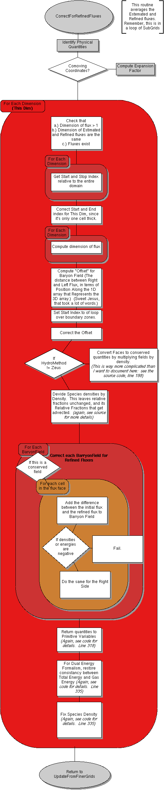

<map name="EvolveLevel_CorrectForRefinedFluxes">
<area shape=poly coords="336,2347, 327,2332, 305,2318, 269,2310, 228,2307, 187,2310, 151,2318, 129,2332, 120,2347, 129,2362, 151,2376, 187,2384, 228,2388, 269,2384, 305,2376, 327,2362" href="EvolveLevel_UpdateFromFinerGrids.html">
<area shape=rect coords="354,192, 471,228" href="https://bitbucket.org/enzo/enzo-dev/src/week-of-code/src/enzo/CosmologyComputeExpansionFactor.C">
<area shape=rect coords="174,120, 300,156" href="https://bitbucket.org/enzo/enzo-dev/src/week-of-code/src/enzo/Grid_IdentifyPhysicalQuantities.C">
<area shape=poly coords="344,51, 335,32, 313,16, 279,5, 240,2, 201,5, 167,16, 145,32, 137,51, 145,70, 167,86, 201,97, 240,101, 279,97, 313,86, 335,70" href="https://bitbucket.org/enzo/enzo-dev/src/week-of-code/src/enzo/Grid_CorrectForRefinedFluxes.C">
</map>
